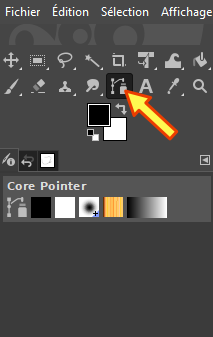
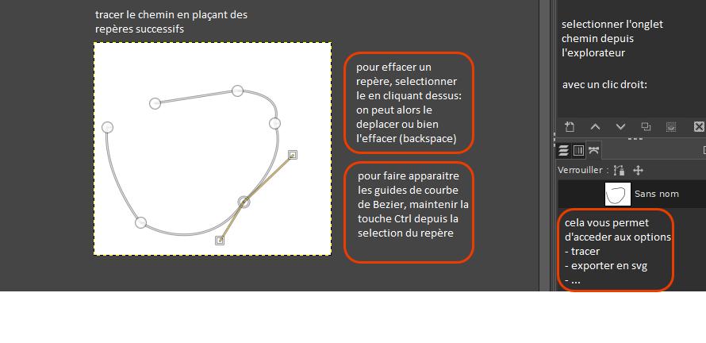
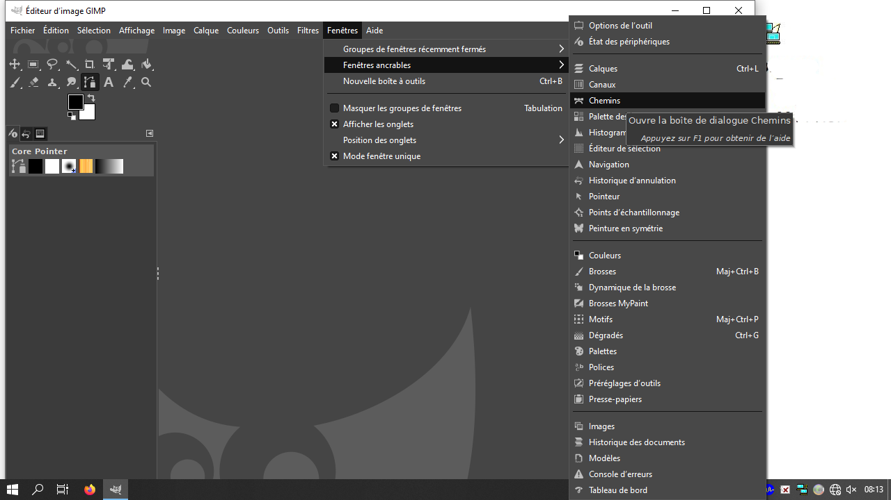

🎮 TP2 - Animation sur tracé SVG
Énoncé du travail pratique
📁 Fichier fourni :
- tp(2)_travail.html : Le fichier sur lequel vous allez travailler
💡 Conseil : Gardez les deux fichiers ouverts en même temps (l'énoncé dans le navigateur, le fichier de travail dans votre éditeur).
📐 ÉTAPE 1 : Créer le conteneur principal
Objectif : Créer une zone de 600×600px centrée qui contiendra toute l'animation.
Ce qui est déjà fait :
- Le CSS du conteneur
#main-containerest déjà défini - Dimensions : 600px × 600px
position: relative(important pour les éléments enfants)margin: 0 auto(centrage horizontal)
📝 À FAIRE VOUS-MÊME :
- Ouvrez le fichier avec votre éditeur HTML (Notepad++, VSCode, ou autre)
- Cherchez dans le code : Trouvez la section
<style>puis#main-container - Lisez chaque propriété CSS et essayez de comprendre son rôle
- Observez le résultat : Ouvrez
tp2_travail.htmldans votre navigateur, vous devriez voir un carré violet dégradé
❓ QUESTIONS :
- Quelle est la largeur du conteneur ?
- Quelle propriété permet de centrer le conteneur horizontalement ?
- Pourquoi utilise-t-on
position: relative?
✅ Validation : Vous devriez voir un carré violet dégradé de 600×600px centré dans la page.
🎨 ÉTAPE 2 : Ajouter les cercles décoratifs
Objectif : Créer 3 cercles semi-transparents positionnés en position: absolute.
Ce qui est déjà fait :
- Les 3
<div class="cercle">sont dans le HTML - Le CSS de base (forme ronde, transparence) est défini
- Les positions sont déjà définies dans le CSS
📝 À FAIRE VOUS-MÊME :
- Trouvez le HTML des cercles : Cherchez dans le code les 3 lignes contenant
<div class="cercle" id="cercle1"></div> - Trouvez le CSS des cercles : Cherchez dans le
<style>la partie avec.cercleet#cercle1,#cercle2,#cercle3 - Observez le résultat : Les 3 cercles blancs semi-transparents doivent être visibles dans le conteneur violet
❓ QUESTIONS :
- Quelle propriété CSS transforme un carré en cercle ?
- Que signifie
rgba(255, 255, 255, 0.2)? - À quoi servent
topetleft? - Où se positionne
#cercle1?
🎯 EXERCICE PRATIQUE :
Ajoutez un 4ème cercle : de diametre 120px, centré en x=300,y=200.
- Ajoutez dans le HTML : (et compléter)
<div class="cercle" id="...."></div> - Ajoutez dans le CSS: (et compléter)
#cercle4 { ... }
- Rafraîchissez la page (F5) et vérifiez qu'un 4ème cercle apparaît
✅ Validation : Vous devriez voir 3 cercles blancs semi-transparents (ou 4 si vous avez fait l'exercice) dans le conteneur violet.
💡 À comprendre :
✨ ÉTAPE 3 : Animation sur trajectoire elliptique
Objectif : Faire suivre le sprite une trajectoire définie en SVG.
📝 À FAIRE VOUS-MÊME :
ÉTAPE 3.1 - Observer le SVG :
- Cherchez dans le code HTML la balise
<svg id="hidden-svg"> - Observez le
viewBox="0 0 300 269"→ système de coordonnées de 300×269 unités - Observez le
<path id="monChemin" d="...">→ c'est la trajectoire elliptique
ÉTAPE 3.2 - Décommenter le code JavaScript :
- Trouvez le script : Descendez tout en bas du code HTML jusqu'à
<script> - Repérez les commentaires : Vous verrez
/*au début et*/à la fin - Supprimez ces lignes :
- Supprimez la ligne
/* TODO ÉTAPE 3... - Supprimez la ligne
FIN DU CODE...et le*/
- Supprimez la ligne
- Vérifiez : Le code JavaScript ne doit plus être grisé/en commentaire
ÉTAPE 3.3 - Tester l'animation :
- Enregistrez votre fichier (Ctrl+S)
- Rafraîchissez la page dans le navigateur (F5)
- Ouvrez la console (F12 → onglet Console)
- Vérifiez qu'il n'y a pas d'erreurs (texte rouge dans la console)
- Cliquez sur le bouton "▶ Démarrer"
- Le sprite (point jaune) doit suivre l'ellipse !
❓ QUESTIONS DE COMPRÉHENSION :
- Que fait
path.getTotalLength()?
- Que fait
path.getPointAtLength(distance)?
- Pourquoi divise-t-on
point.xparsvgWidth?
- Pourquoi multiplie-t-on ensuite par 600 ?
- Que représente la variable
progress?
- Que se passe-t-il quand
progressatteint 1 ? - Quelle fonction gère le déplacement du sprite? Comment?
🔍 COMMENT ÇA MARCHE :
La conversion des coordonnées en 3 étapes :
🎯 EXERCICE DE TEST :
Une fois l'animation lancée :
- Testez le bouton "⏸ Pause" → l'animation doit s'arrêter
- Testez le bouton "↺ Recommencer" → le sprite retourne au début
- Bougez le curseur "Vitesse" → l'animation doit accélérer ou ralentir
- Observez l'affichage de la position en % et des coordonnées x, y
✅ Validation : Le sprite jaune suit la trajectoire elliptique en boucle. Les boutons et le curseur fonctionnent.
⚠️ En cas d'erreur :
- Le sprite ne bouge pas : Vérifiez que vous avez bien décommenté TOUT le code JavaScript
- Erreur dans la console : Vérifiez qu'il n'y a pas de
/*ou*/au milieu du code - Le sprite est invisible : Vérifiez le CSS de
#sprite
🎨 ÉTAPE 4 : Créer votre propre tracé avec GIMP
Objectif : Remplacer l'ellipse par votre propre dessin créé dans GIMP.
📝 À FAIRE VOUS-MÊME :
PARTIE A - Créer le tracé dans GIMP :
- Ouvrir GIMP
- Fichier → Nouvelle image
- Largeur : 300 pixels
- Hauteur : 300 pixels
- Cliquez sur OK
- Activer l'outil Chemin
- Appuyez sur la touche B
- OU cliquez sur l'icône "Chemins" dans la boîte à outils

- Dessiner votre tracé
- Cliquez pour créer des points (au moins 4-5 points)
- Créez une forme intéressante (vague, spirale, zigzag...)
- Conseil : Restez dans l'image, ne sortez pas des bords
- Optionnel : Clic droit sur le dernier point → "Fermer le chemin" pour faire une boucle fermée

- Exporter en SVG
- à partir du menu: Fenêtres → Fenêtres ancrables → Chemins ;
- Dans l'explorateur des chemins (fenêtre à droite): Clic droit sur la miniature du calque → Exporter le chemin...
- Donnez un nom :
mon-trace.svg - Vérifiez que l'extension est bien .svg
- Cliquez sur Exporter

PARTIE B - Extraire le path du fichier SVG :
- Ouvrir le fichier SVG avec un éditeur de texte
- Clic droit sur
mon-trace.svg→ Ouvrir avec → Bloc-notes (ou VSCode, Notepad++)
- Clic droit sur
- Repérer le viewBox
- Cherchez la ligne contenant
<svg ... viewBox="0 0 300 300"> - Notez les dimensions (ex: 300 300)
- Cherchez la ligne contenant
- Copier le path
- Cherchez la ligne
<path ... d="M 50,50 C ..."> - Sélectionnez TOUT le contenu de
d="..."(entre les guillemets) - Copiez-le (Ctrl+C)
- Cherchez la ligne
PARTIE C - Intégrer dans votre code HTML :
- Commenter l'ancien SVG
- Cherchez la section avec
<svg id="hidden-svg">(l'ellipse) - Ajoutez
<!--AVANT<svg - Ajoutez
-->APRÈS</svg> - Ça devrait ressembler à :
<!-- <svg id="hidden-svg" viewBox="0 0 300 269"> <path id="monChemin" d="..." /> </svg> -->
- Cherchez la section avec
- Décommenter le nouveau SVG
- Cherchez la section "ÉTAPE 4 : Votre SVG personnalisé"
- Retirez le
<!--au début - Retirez le
-->à la fin
- Coller votre path
- Remplacez
COLLEZ_ICI_VOTRE_PATH_DEPUIS_GIMP - Par le contenu que vous avez copié depuis le fichier SVG GIMP
- Remplacez
- Adapter les dimensions si nécessaire
- Si votre viewBox GIMP était
300 300, pas de changement - Si c'était différent (ex:
400 400), modifiez dans le JavaScript :// Cherchez ces lignes et modifiez : const svgWidth = 400; // au lieu de 300 const svgHeight = 400; // au lieu de 269
- Si votre viewBox GIMP était
PARTIE D - Tester votre tracé :
- Enregistrez votre fichier HTML (Ctrl+S)
- Rafraîchissez la page dans le navigateur (F5)
- Ouvrez la console (F12) et vérifiez qu'il n'y a pas d'erreurs
- Cliquez sur "▶ Démarrer"
- Le sprite doit suivre VOTRE tracé !
❓ QUESTIONS :
- Où est définie la trajectoire du sprite ?
- Pourquoi doit-on adapter
svgWidthetsvgHeight?
- Que se passe-t-il si on oublie de commenter l'ancien SVG ?
🎯 DÉFI BONUS (pour les rapides) :
- Créez un tracé en forme de votre initiale (première lettre de votre prénom)
- Modifiez la couleur du sprite en changeant
background:dans le CSS - Créez un deuxième sprite avec un ID différent et faites-le suivre le même tracé
✅ Validation : Le sprite jaune suit votre tracé personnalisé créé dans GIMP.
⚠️ Problèmes courants :
- Le sprite ne bouge plus : Vérifiez que l'ID est bien
id="monChemin"et qu'il n'y en a qu'un seul (commentez l'ancien SVG) - Le sprite sort du cadre : Adaptez
svgWidthetsvgHeightselon votre viewBox GIMP - Erreur "Cannot read property...": Vérifiez la syntaxe du path (guillemets, pas de caractères manquants)
- Le tracé SVG est vide dans GIMP : Assurez-vous d'avoir bien utilisé l'outil "Chemins" (touche B) et non le pinceau
🎉 Félicitations !
Si vous avez terminé toutes les étapes, vous maîtrisez maintenant :
- ✅ Le positionnement CSS avec
position: relativeetabsolute - ✅ La manipulation des coordonnées SVG
- ✅ La conversion de systèmes de coordonnées
- ✅ L'animation avec
requestAnimationFrame() - ✅ L'utilisation de GIMP pour créer des tracés vectoriels
- ✅ L'intégration SVG dans une page web
Prochaines étapes possibles : Ajouter des collisions, créer plusieurs sprites, modifier la couleur selon la position, ajouter des sons...